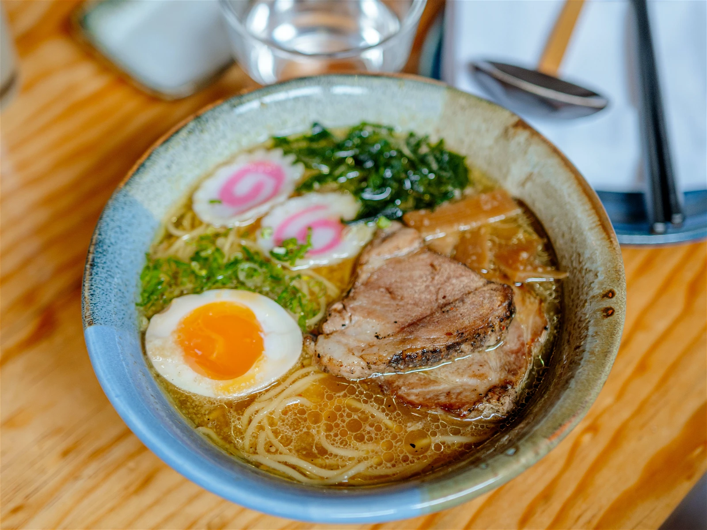

Miso Ramen

Description
Ichiraku's miso ramen was Naruto Uzumaki's favorite meal
thoughout the anime. Now you can learn how to make one of Naruto's and
my favorite dishes, miso ramen, on your own. This page will go over how to approach
making ramen just how Naruto and I love it. Make changes to the recipes as you please.
Ingredients
- Miso
- Bean Paste
- Sesame Seeds or Oil
- Chicken Broth
- White Pepper Powder
- Fresh or Dried Noodles
- Pork Belly
- Egg
- Green Onion
- Narutomaki
Steps
- Bring your chicken broth to a simmer and stir in miso, bean paste, sesame seeds or oil, and white pepper powder
- Cook pork belly in a pot or pan over medium heat for 4-5 minutes and set aside
- Put a medium pot to a boil, then place the egg in the pot for 6 minutes
- Boil ramen noodles in a big pot of water for around 30 seconds (ramen cooks fast be prepared!)
- Gather the noodles, pork, and egg and put it in the soup
- Chop green onions and put in the green onions and narutomaki on top (feel free the use other toppings of your choice)
- Enjoy your meal!